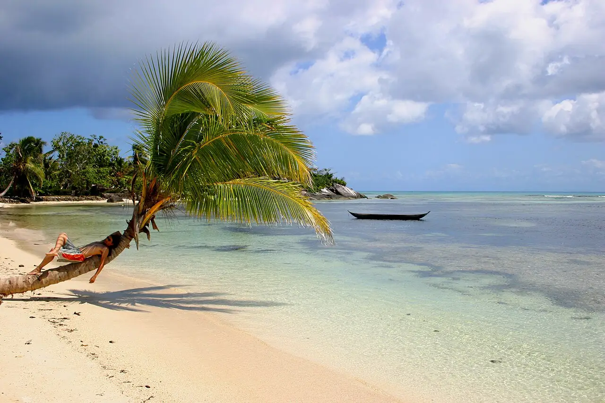

Île aux Nattes — Sainte-Marie
Nosy Boraha, Madagascar · snorkeling, baignade, plongée

Petite île au sud de Sainte-Marie, entourée d’un lagon clair et de plages de sable blanc. De juillet à septembre, les baleines à bosse passent dans le canal entre Sainte-Marie et la Grande Terre.
- Lieu
- Nosy Boraha, Madagascar
- Niveau
- Débutant
- Activités
- snorkeling, baignade, plongée
- Type d'eau
- Mer / océan
- Coordonnées
- -17.11, 49.81 (position approximative du secteur)
Dangers à connaître
- Courants dans la passe entre les deux îles : ne la traverse pas à la nage.
- Oursins et coraux sur les platiers à marée basse.
Le conseil d'Ocean Buddy
Pour observer les baleines, choisis un opérateur qui respecte les règles d’approche (distance et durée limitées).
Ouvrir dans Ocean Buddy Télécharger sur l'App Store
Source : Fiche Ocean Buddy · septembre 2026 · à vérifier localement.